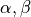
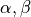
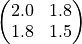
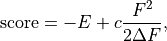

Input file: cryspy.in¶
Contents
File format¶
CrySPY uses the ConfigParser module to read input file, cryspy.in .
cryspy.in consists of sections, led by a [section] header and followed by name = value or name : value entries.
Section names and values are case sensitive, but names are not.
Lines beginning with # or ; are ignored and may be used to provide comments.
Accepted Boolean values are 1, yes, true, and on, which cause this method to return True, and 0, no, false, and off, which cause it to return False. These string values for Boolean are checked in a case-insensitive manner.
Some values are given in a space-separated manner.
See also
Attention
Example¶
cryspy.in for YCo5 by random search:
[basic]
algo = RS
calc_code = VASP
tot_struc = 10
natot = 6
atype = Y Co
nat = 1 5
nstage = 4
njob = 5
jobcmd = qsub
jobfile = job_cryspy
[lattice]
minlen = 4
maxlen = 8
dangle = 20
mindist_1 = 2.0 1.8
mindist_2 = 1.8 1.5
[VASP]
kppvol = 40 100 100 100
[basic] section¶
| Name | Value | Default value | Description |
|---|---|---|---|
algo |
RS , BO, LAQA |
Algorithm | |
calc_code |
VASP, QE, soiap, LAMMPS |
Caluculation code for structure optimization | |
tot_struc |
integer | Total number of structures | |
natot |
integer | Total number of atoms in a unit cell | |
atype |
atomic symbol [atomic symbol ...] | Atom type | |
nat |
integer [integer ...] | Number of atoms in atom type1 [type2 ...] | |
nstage |
integer | Number of calculation stages | |
njob |
integer | Number simultaneously submitted jobs | |
jobcmd |
Specify a command to submit jobs, such as qsub | ||
jobfile |
Specify a jobfile to submit jobs for VASP, QE, and so on |
algo¶
Available algorithms for crystal structure prediction are:
RS: Random SearchBO: Bayesian OptimizationLAQA: Look Ahead based on Quadratic Approximation
In using LAQA, automatically fs_step_flag = True in [option] section.
calc_code¶
CrySPY is interfaced with:
VASP: VASP (https://www.vasp.at)QE: Quantum Espresso (http://www.quantum-espresso.org)soiap: soiap (https://github.com/nbsato/soiap)LAMMPS: LAMMPS (http://lammps.sandia.gov)
[lattice] section¶
| Name | Value | Default value | Description |
|---|---|---|---|
minlen |
float | Minimum length of lattce vector | |
maxlen |
float | Maximum length of lattce vector | |
dangle |
float | Delta angle for alpha, beta, and gamma in degree unit | |
mindist_? |
float [float ...] | Constraint on minimum interatomic distance |
 , places constranits on the lattice parameters , and
, places constranits on the lattice parameters , and  as follows:
as follows:mindist¶
A mindist matrix consists on mindist_1, mindist_2 ... . For example, in the case of YCo5 (atype = [‘Y’, ‘Co’]),
suppose taht mindist_1 is [2.0, 1,8] and mindist_2 is [1.8, 1.5].
The mindist matrix is

This means that minimum interatomic distances of Y-Y, Y-Co, and Co-Co are 2.0, 1.8, and 1.5, respectively. A mindist matrix should be a symmetric matrix.
Attention
mindist matrix: symmetric matrix
[VASP] section¶
| Name | Value | Default value | Description |
|---|---|---|---|
kppvol |
integer [integer ...] | Grid density per Angstrom-3 of reciprocal cell in each stage | |
force_gamma |
boolean | False |
If True, force gammma-centered mesh |
[QE] section¶
| Name | Value | Default value | Description |
|---|---|---|---|
kppvol |
integer [integer ...] | Grid density per Angstrom-3 of reciprocal cell in each stage | |
qe_infile |
Specify your QE input file name | ||
qe_outfile |
Specify your QE output file name |
[soiap] section¶
| Name | Value | Default value | Description |
|---|---|---|---|
soiap_infile |
Specify your soiap input file name | ||
soiap_outfile |
Specify your soiap output file name | ||
soiap_cif |
Specify your CIF-formatted soiap initial structure file name |
[LAMMPS] section¶
| Name | Value | Default value | Description |
|---|---|---|---|
lammps_infile |
Specify your LAMMPS input file name | ||
lammps_potential |
None |
Specify your LAMMPS potential, if any | |
lammps_outfile |
Specify your LAMMPS output file name | ||
lammps_data |
Specify your LAMMPS data file name |
[BO] section¶
| Name | Value | Default value | Description |
|---|---|---|---|
interval |
integer | Number of structures to calculate between learning data | |
score |
TS, EI, PI |
Acquisition function | |
num_rand_basis |
integer | 0 | If 0: Gaussian process, else: number of basis function |
cdev |
float | 0.001 | Cutoff of deviation for standardization |
dscrpt |
FP |
Descriptor for structure | |
fp_rmin |
float | 0.5 | Minimum cutoff of r in fingerprint |
fp_rmax |
float | 5.0 | Maximum cutoff of r in fingerprint |
fp_npoints |
integer | 50 | Number of discretized r points for each pair in fingerprint |
fp_sigma |
float | 0.2 | Sigma parameter in Gaussian smearing function in Angstrom unit |
[LAQA] section¶
| Name | Value | Default value | Description |
|---|---|---|---|
nselect |
integer | Number of structures to select at once | |
weight_laqa |
float | 1.0 | weight of bias |
weight_laqa¶
In LAQA, the score is evaluated by the following equation:

where  is
is weight_laqa, weight of bias.
[option] section¶
| Name | Value | Default value | Description |
|---|---|---|---|
maxcnt |
integer | 200 | Maximum number of trials to determine atom positions |
stop_chkpt |
integer | 0 | Program stops at a specified check point |
symtoleI |
float | 0.001 | Tolerance for symmetry finding for Initial structures |
symtoleR |
float | 0.1 | Tolerance for symmetry finding for Relaxed structures |
spgnum |
all, space group number |
all |
Constraint on space group |
load_struc_flag |
boolean | False |
If True, load initial structures from ./data/pkl_data/init_struc_data.pkl |
stop_next_struc |
boolean | False |
If True, not submit next structures, but submit next stage and collect results |
energy_step_flag |
boolean | False |
If True, save energy_step_data in ./data/pkl_data/energy_step_data.pkl |
struc_step_flag |
boolean | False |
If True, save struc_step_data in ./data/pkl_data/struc_step_data.pkl |
fs_step_flag |
boolean | False |
If True, save fs_step_data (force and stress) in ./data/pkl_data/fs_step_data.pkl |